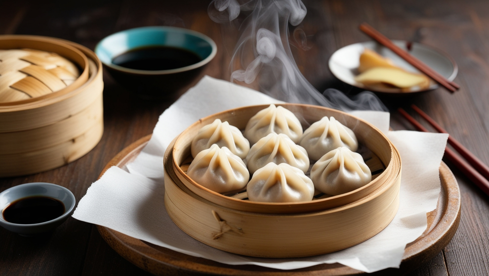

Xiao Long Bao (Steamed Dumplings)
Discover the charm of Xiao Long Bao, the iconic Chinese steamed dumplings that hide a delicate broth inside. These little treasures, carefully folded and steamed in a traditional bamboo steamer, combine the softness of their dough with a juicy and aromatic filling. Learn how to prepare them step by step and surprise your loved ones with a dish worthy of a banquet in Shanghai. Ideal for those looking to perfect the art of dumplings.
